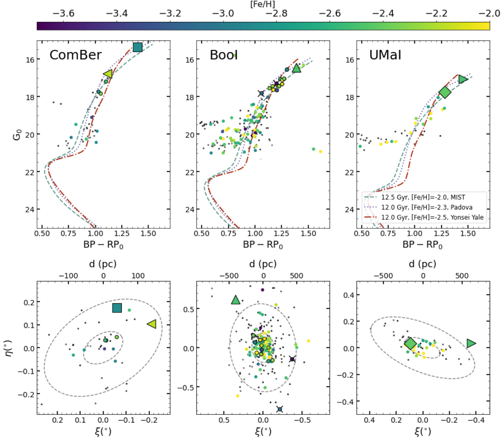

Hi there! I study the small ancient galaxies that orbit the Milky Way. I'm interested in the chemical compositions of stars in these galaxies because they hold clues to how the first stars exploded, and how the first galaxies formed. I use high-resolution spectroscopy for my research, including the GRACES and GHOST spectrographs at Gemini North and South.

The Cosmic Hunt for Members in the Outskirts of Ultra Faint
Dwarf Galaxies:
Ursa Major I, Coma Berenices, and Boötes I
Fletcher Waller, Kim A. Venn, Federico Sestito, Jaclyn Jensen, Collin L. Kielty, Christian Hayes, Alan W. McConnachie, and Julio F. Navarro
Ultra-Faint Dwarf galaxies are some of the most ancient, low-mass, and metal-poor galaxies. They contain hundreds to thousands of stars embedded in deep dark matter haloes. These galaxies stopped evolving in the first 1-2 billion years after the Big Bang, meaning they only had time for a few generations of stars to form at all. This means that the chemical element signatures of their stars contain relatively pristine fingerprints of some of the first supernova. By measuring magnesium, iron and barium, among many other elements, we can work towards understanding the evolution of stars and galaxies in the very early universe. In this paper, we report chemical abundances for newly identified stars in 3 Ultra-Faint Dwarfs, including some unexpected features that contradict findings from previous results.
The Pristine Inner Galaxy Survey (PIGS) V:
a
chemo-dynamical investigation of the early assembly of the
Milky Way with the most metal-poor stars in the bulge I
Federico Sestito , Kim A. Venn , Anke Arentsen , David Aguado , Collin L. Kielty , Carmela Lardo , Nicolas F. Martin , Julio F. Navarro , Else Starkenburg , Fletcher Waller , Raymond G. Carlberg , Patrick François , Jonay I. González Hernández, Georges Kordopatis, Sara Vitali, and Zhen Yuan
The metal-poor stars in the Galactic bulge provide unique information on the early evolution and assembly of the Milky Way. A chemo-dynamical analysis of 17 very metal-poor stars suggests that the majority of our stars are very similar to metal-poor stars in the Galactic halo. Orbits calculated from Gaia EDR3 imply these stars are brought into the bulge during the earliest Galactic assembly. Most of our stars show little evidence of enrichment by pair-instability supernovae. Two of our stars are compatible with second-generation globular cluster stars, suggestive of the presence of ancient and now dissolved globular clusters in the inner Galaxy. One Star supports the growing evidence for the existence of lower-metallicity globular clusters in the early Universe. A third star is consistent with formation in a system polluted by only one or a few low-mass supernovae. Interestingly, its orbit is confined to the Galactic plane, like other very metal-poor stars found in the literature, which have been associated with the earliest building blocks of the Milky Way.